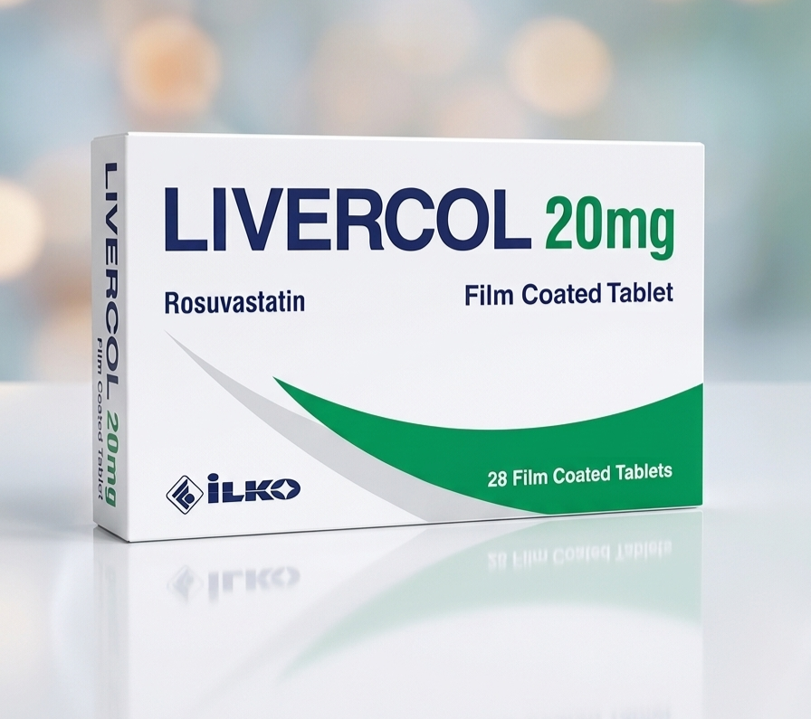

اضغط على صورة الدواء لتحميل ملف التذكير لمدة 28 يوم

اضغط على صورة الدواء لتحميل ملف التذكير 📥
📌 بعد التحميل، افتح الملف ثم اختر Add / Import لإضافة التذكيرات للتقويم.
هذا الملف يعمل على Android و iPhone.